봄SPRING
청매실 · 직접 담그는 청
제철 열매를 고르고, 청을 담가요.
11월 1일부터 겨울방학이에요. 다시 여는 날은 인스타그램 공지를 확인해 주세요.
FOUR SEASONS
그 계절에 나는 재료로 빙수와 디저트를 만듭니다.
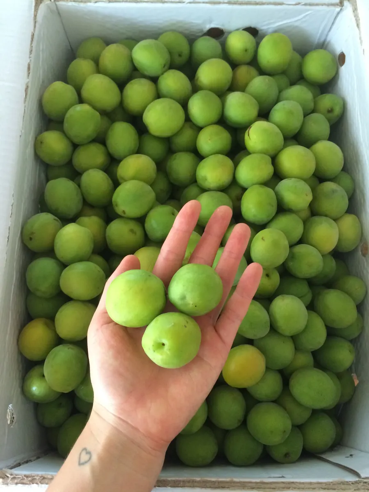
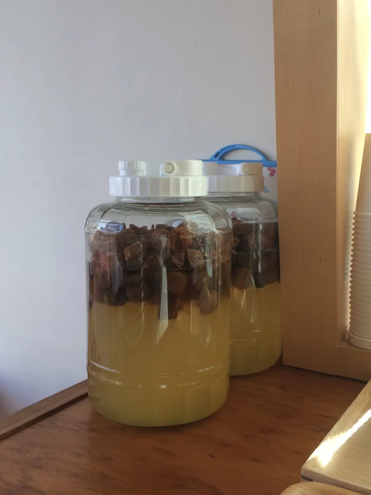
봄SPRING
청매실 · 직접 담그는 청
제철 열매를 고르고, 청을 담가요.
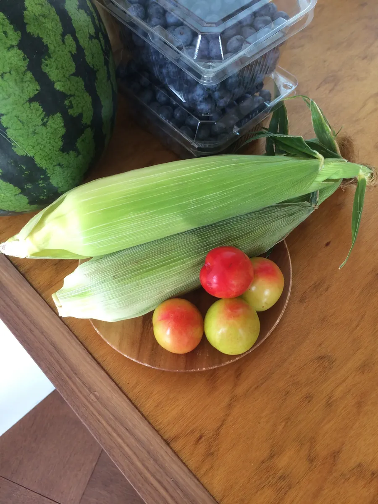
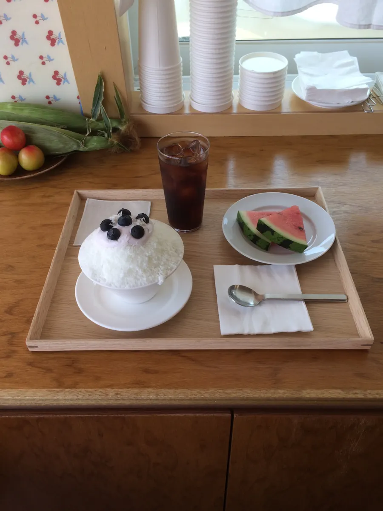
여름SUMMER
수박 · 블루베리 · 옥수수 · 복숭아
한여름 과일을 얹은 빙수 한 그릇.
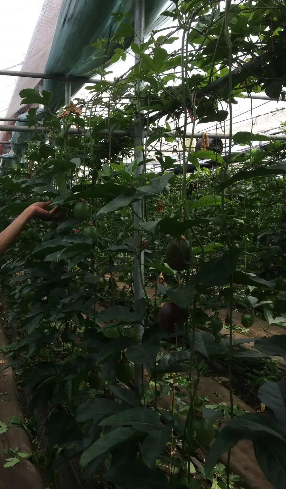
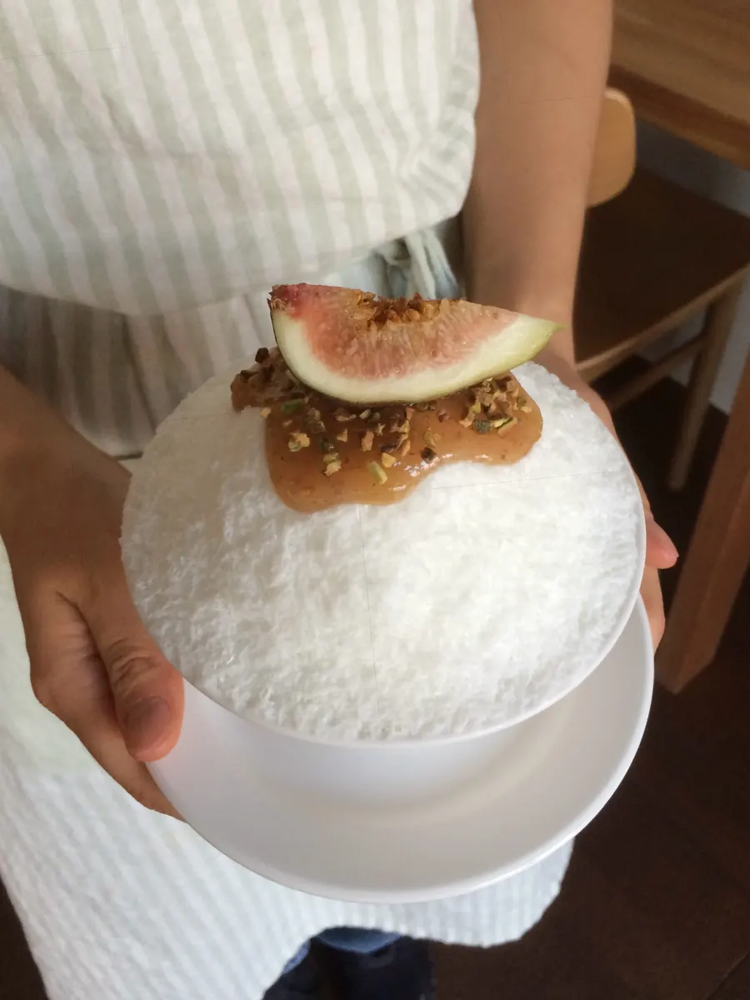
가을AUTUMN
무화과 · 밤
익어 가는 열매를 빙수 위에 올려요.
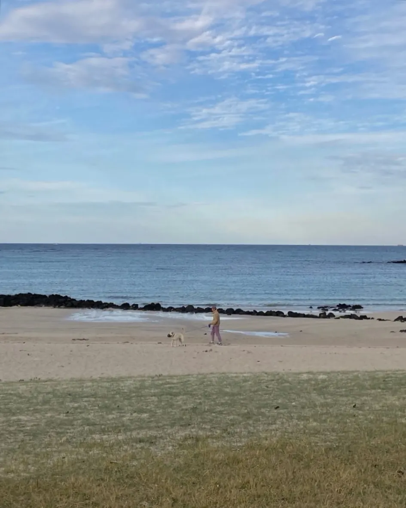
겨울WINTER BREAK
겨울방학
11월 1일부터 겨울방학이에요. 다시 여는 날은 인스타그램 공지를 확인해 주세요.
THE ROOM
원목 테이블과 민트색 문, 컵마다 꽂아 둔 꽃.
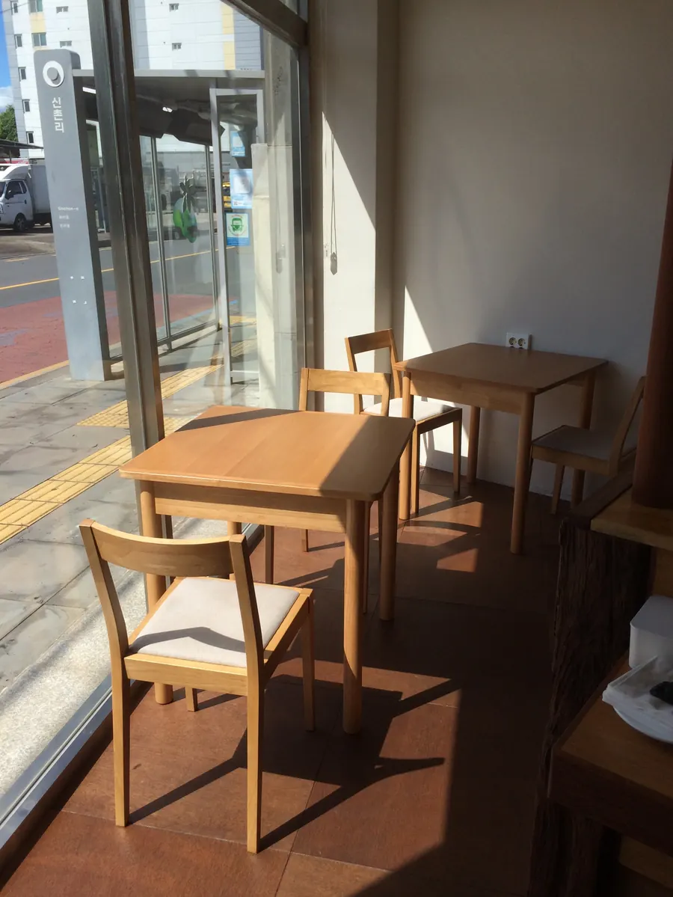
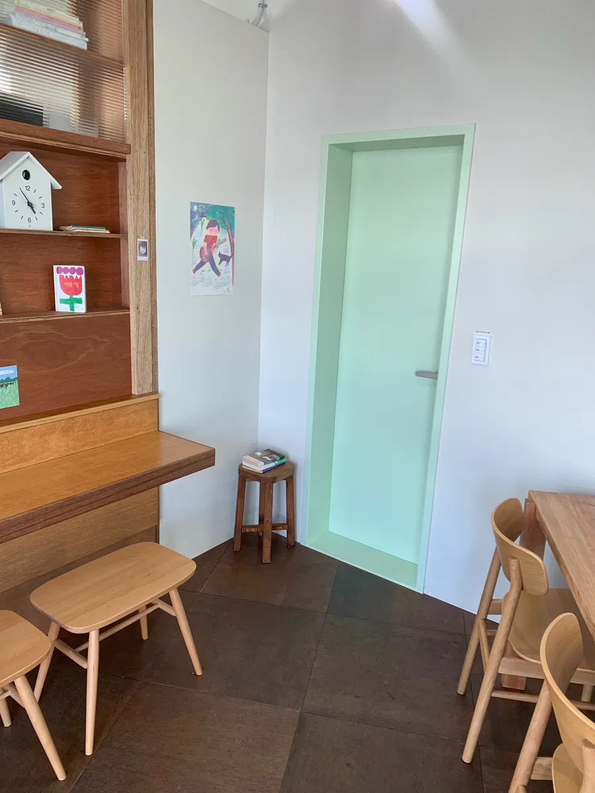
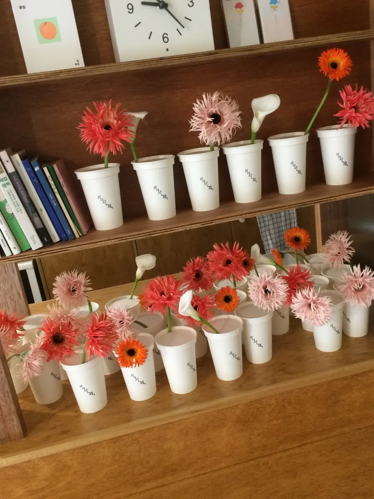
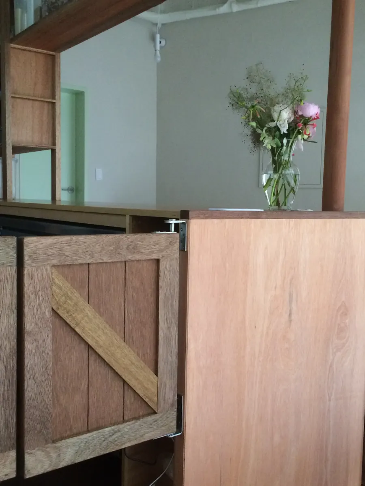
VISIT
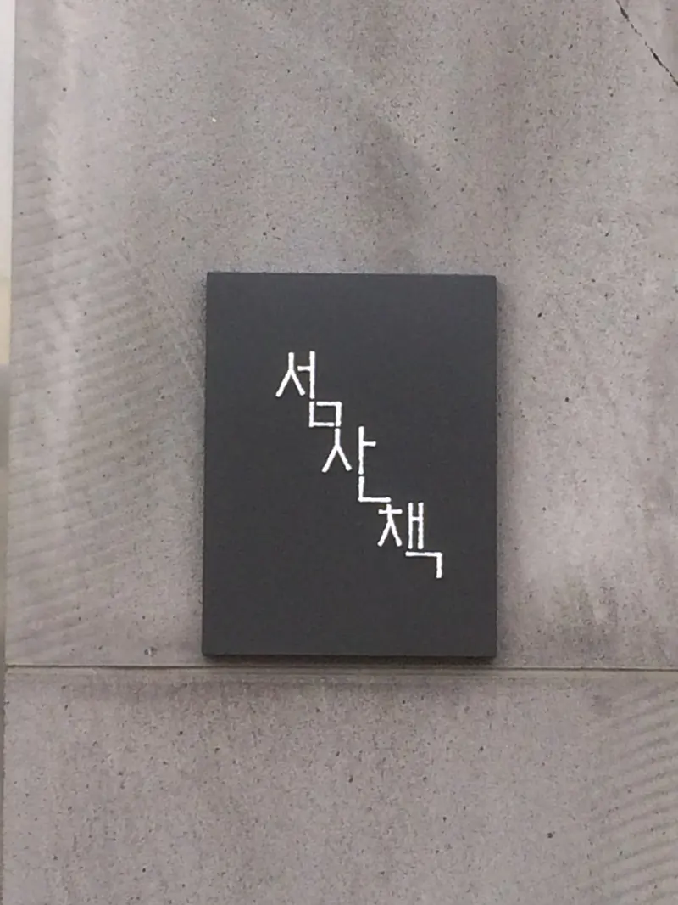